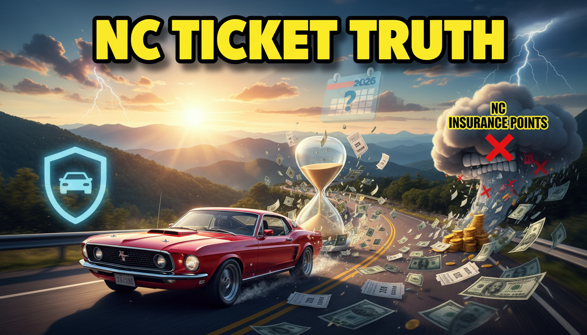
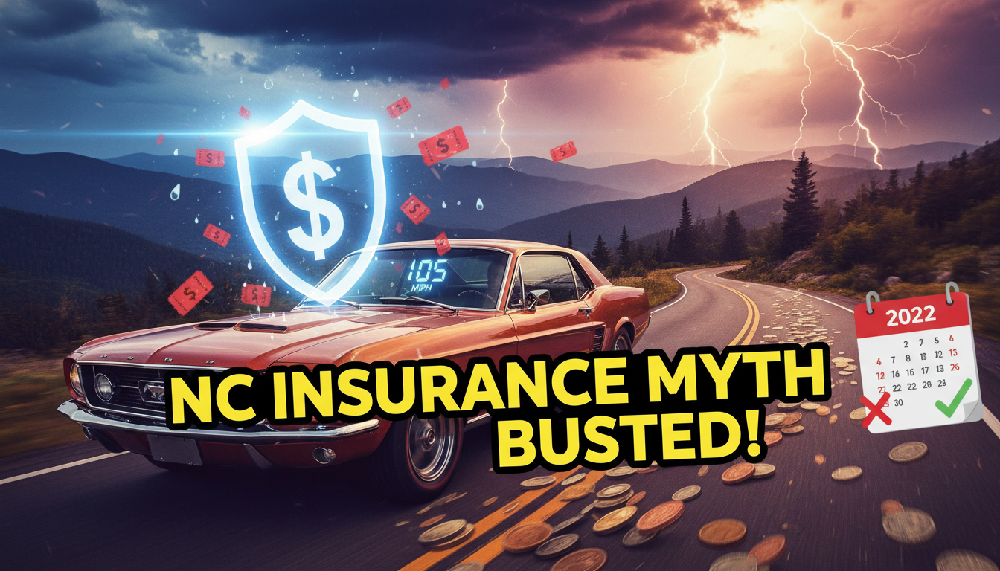

It’s 2026. You’re cruising down I-77 near Jonesville or heading up Highway 268 toward Pilot Mountain, and you remember that speeding ticket from back in 2022. You paid the fine, but you’ve been paying the "insurance tax" ever since.
Here at Bill Layne Insurance in Elkin, the most common question we get is: "When will my rate finally go down?"
The good news is, if you’ve kept your nose clean since 2022, relief is here.
North Carolina uses the Safe Driver Incentive Plan (SDIP). Under this state-regulated system, points are assigned to moving violations.
The "Experience Period" is three years. This usually begins on the date of your conviction (not the date you were pulled over), or the date your policy renews after that conviction.
Since we are now in 2026, a 2022 conviction is 4 years old. It should no longer be chargeable on your policy.
Why does it matter so much? Because SDIP points are expensive. Unlike many other states, NC mandates specific surcharges.
| Violation Type | Ins. Points | Rate Increase |
|---|---|---|
| Speeding 10mph or less* | 1 Point | +30% |
| Speeding >10mph over limit | 2 Points | +45% |
| Accident (At Fault) | 3 Points | +60% |
| Speeding >75mph | 4 Points | +80% |
| Clean Record (3+ Yrs) | 0 Points | 0% |
*Assuming not in a school zone and clean prior record.
Living in Surry, Yadkin, or Wilkes counties puts you in "Territory" ratings that are generally lower than Charlotte or Raleigh. But points hit everyone the same.
Did you know? In NC, we have the "Prayer for Judgment Continued" (PJC). If you used a PJC for that 2022 ticket, your rates might never have gone up at all. However, you can generally only use one PJC per household every three years.

Insurance companies usually automate this, but mistakes happen. Here is how to check:
Estimate your savings if points drop off.
Generally, no. NC insurance points stay on your policy for three years. Since 2026 is four years after 2022, the surcharge should be removed at your next policy renewal.
Not exactly. Insurance rates are set for the policy term (usually 6 months). If your 3-year mark hits in the middle of a term, the price won't drop until the policy renews.
No, they are completely different systems. DMV license points can lead to suspension. SDIP insurance points determine your rate. It is possible to have DMV points but no insurance points (e.g., using a PJC).
No. Insurance companies share data via reports like CLUE. However, if your 2022 ticket is now over 3 years old, a new company won't charge you for it in 2026 either.
That complicates things. While the speeding ticket points last 3 years, some major convictions or severe accidents can impact eligibility for certain "preferred" tiers for longer, though SDIP surcharges are strictly regulated at 3 years.
Absolutely. If you live in the Elkin, Jonesville, or Mount Airy area, give us a call. We can review your current policy to ensure you aren't paying for old mistakes.
If your record is clean since 2022, you deserve a better rate. Let Bill Layne Insurance shop the market for you.
📞 Call 336-835-1993 💻 Get a Quote Online
With 20+ years of experience serving the Yadkin Valley, Bill Layne helps neighbors in Elkin, Mount Airy, and beyond navigate the complexities of NC insurance laws. He specializes in finding the best value for local families.